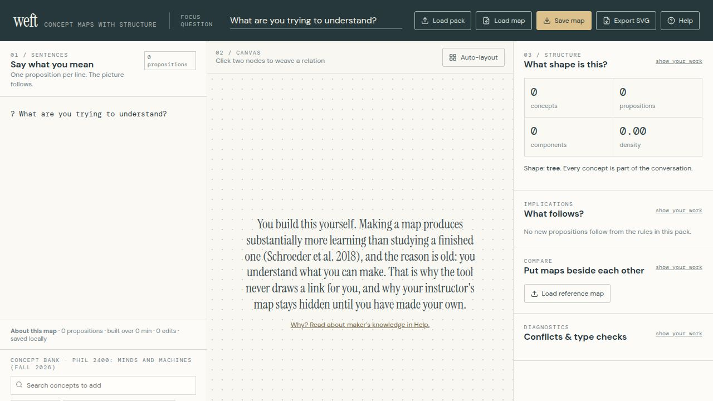

Colligate
A workspace for building concept maps by hand. You enter the vocabulary, place every concept, and decide what each arrow means. There is no course pack, no imported text path, and no AI. The map is yours because you made it.

Why it is built this way
Students learn more from constructing a concept map than from studying a finished one. The work of deciding what connects to what is where the learning happens. That is the same principle as Vico’s verum factum—the true is the made—and it is why Colligate refuses shortcuts that would assemble the map for you.
I built Colligate for teaching, including Minds and Machines. It also stands as a small instrument of the research: making is discriminatingly unforgiving, and a student who can explain each node and arrow can do so because they put it there.
How to use it
Build a map from scratch
- Enter a concept label and press Add concept. It appears in your concept bank.
- Enter a relation label and press Add relation.
- Click a bank chip to place it on the canvas, or drag it into place.
- Click one node, then another, and choose a relation. That creates one directed arrow and one proposition.
- Use Save map for a JSON backup and Export SVG for a picture.
The proposition pane is a read-only record of the arrows you drew. Change the map on the canvas, not by typing sentences.
Run an assignment
- Give students a focus question and any rules about the number or kinds of concepts and relations.
- Students enter their own labels, place nodes, connect pairs, and press Save map.
-
They submit the
.map.jsonfile wherever you collect work. - Grade content and reasoning yourself. Colligate reports graph structure; it does not decide whether a statement is true.
Nothing is sent anywhere. Maps stay in the student’s browser unless they save a JSON backup.
Open it
The workspace is a static page on this site. Your map never leaves the machine you are using.